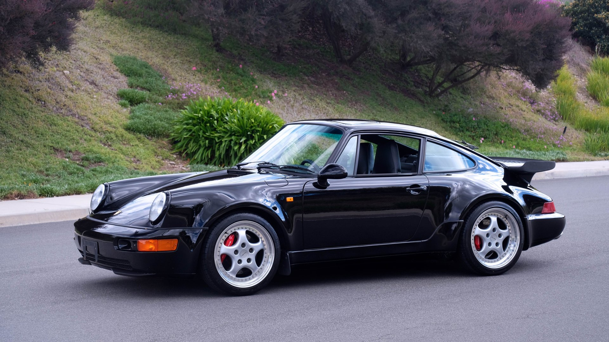
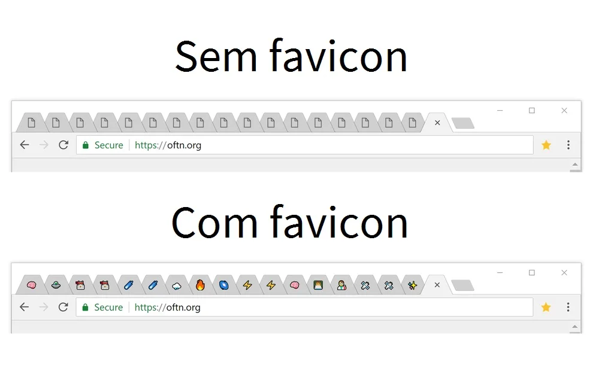

Abaixo você pode ver uma imagen que está na mesma pasta do "index":

Podemos também carregar imagens que estão em outra pasta, contanto que esta esteja na pasta atual:
Também podemos carregar imagens externas, e pra isso usamos a sua URL completa:

Favicons são aqueles ícones que aparecem nos topos das páginas.
ex.:

Vou adicionar um ícone. Está localizado no topo da página.
Eles usam a tag link rel="shortcut icon", essa tag fica localizada acima da tag <meta>.